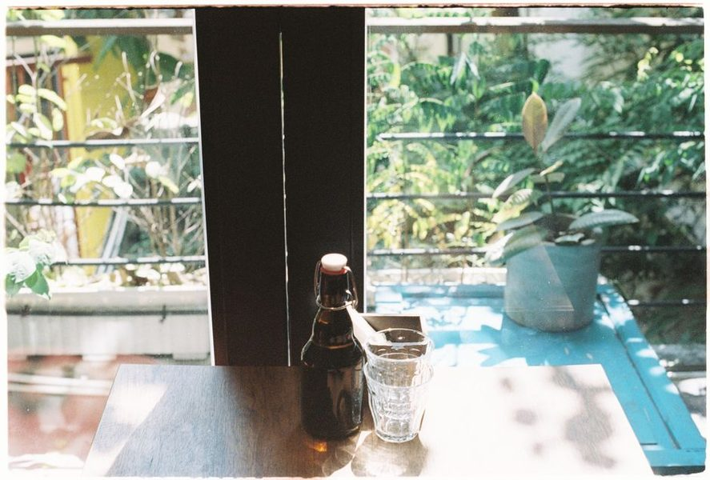

Anotado a 3 de Abril · leitura de 5 minutos
O sol muda de sítio — e a varanda muda com ele
Antes de escolher a planta, passe um domingo a olhar para a sua própria varanda. É a única medição que interessa.

A etiqueta diz sol pleno, meia-sombra ou sombra, e o comprador olha para a varanda ao domingo à tarde e decide. O erro está aí: a mesma varanda recebe quatro horas de sol em Julho e uma hora em Dezembro, porque o sol anda mais baixo e o prédio da frente cresce em sombra.
Medir sem aparelho
Escolha um dia livre e aponte de duas em duas horas onde bate o sol, das oito às vinte. Fica com um mapa honesto da varanda. Repita no fim do Outono; a diferença costuma surpreender quem nunca reparou.
Sol pleno, na prática, são seis horas ou mais de sol directo. Meia-sombra são três a cinco, de preferência de manhã. Menos de três horas é sombra, por muito clara que a varanda pareça — claridade não é sol directo.
Orientação e o que ela promete
Varanda a sul recebe sol quase todo o dia e queima folha tenra no Verão. A nascente tem sol de manhã, mais suave, e é a melhor para aromáticas e folhagem. A poente aquece de tarde e seca a terra depressa. A norte quase não tem sol directo e serve fetos, hera e plantas de folha.
Um resguardo de rede ou uma cortina de vime muda a categoria da varanda: filtra a hora mais dura e transforma um sol pleno agressivo em meia-sombra aproveitável, sem obra nenhuma.
O vento conta tanto como o sol
Em varandas altas, o vento é o factor esquecido: desidrata folha e derruba vaso alto. Plantas de folha larga sofrem mais do que as de folha estreita. Baixar o centro de gravidade — vaso mais largo, pedra por cima da terra — resolve a queda; agrupar vasos resolve parte da secura.
Agrupar tem um segundo efeito: as plantas criam entre si um microclima mais húmido. Numa varanda ventosa a poente, três vasos juntos aguentam melhor do que três vasos espalhados.
Escolher pela varanda, não pela montra
Depois do mapa feito, a escolha fica simples. Nascente com quatro horas: manjericão, salsa, hortelã, cebolinho. Sul com oito horas e vento: alecrim, tomilho, suculentas, tomateiro em vaso grande. Norte: fetos, aspidistras, hera, algumas begónias.
Comprar a planta e depois procurar-lhe sítio é a ordem inversa, e é a razão pela qual tanta gente conclui que não tem jeito para plantas. Não é jeito: é a luz que a varanda tem.
Este texto é revisto sempre que a prática na varanda desmente o que aqui está escrito. A data no topo é a da última revisão.